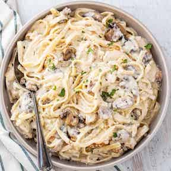

Chicken Fettuccini Alfredo

Description
A classic dish that the whole family can enjoy.
Ingredients
- 6 skinless, boneless chicken breast halves - cut into cubes
- 6 tablespoons butter, divided
- 4 cloves garlic, minced, divided
- 1 tablespoon Italian seasoning
- 1 pound fettuccini pasta
- 1 onion, diced
- 1 (8 ounce) package sliced mushrooms
- ⅓ cup all-purpose flour
- 1 tablespoon salt
- ¾ teaspoon ground white pepper
- 3 cups milk
- 1 cup half-and-half
- ¾ cup grated Parmesan cheese
- 8 ounces shredded Colby-Monterey Jack cheese
- 3 roma (plum) tomatoes, diced
- ½ cup sour cream
Steps
- In a large skillet over medium heat combine chicken, 2 tablespoons butter, 2 cloves garlic, and Italian seasoning. Cook until chicken is no longer pink inside. Remove from skillet and set aside.
- Bring a large pot of lightly salted water to a boil. Add pasta and cook for 8 to 10 minutes or until al dente; drain.
- Meanwhile, melt 4 tablespoons butter in the skillet. Saute onion, 2 cloves garlic, and mushrooms until onions are transparent. Stir in flour, salt and pepper; cook 2 minutes. Slowly add milk and half-and-half, stirring until smooth and creamy. Stir in Parmesan and Colby-Monterey Jack cheeses; stir until cheese is melted. Stir in chicken mixture, tomatoes and sour cream. Serve over cooked fettuccini.